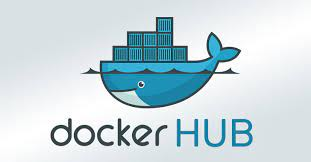
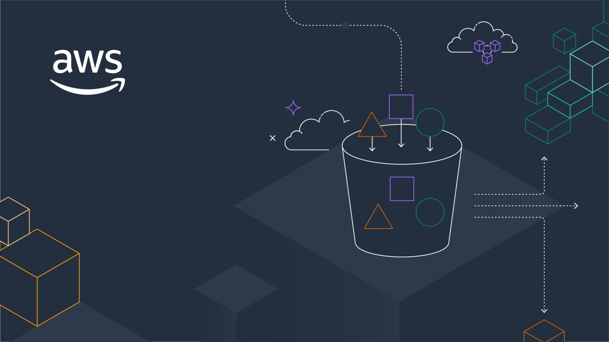

|

Docker Hub is a Docker Registry, a cloud-hosted version, open-source, scalable server-side application, and stateless. It can manage the sharing and storage of Docker images. Using Docker, developers can access it as public and create their own private repositories space and automate application build custom functions, work-groups, and webhooks. |
HashiCorp Terraform is an infrastructure as code tool that lets you define infrastructure resources in human-readable configuration files that you can version, reuse, and share. You can then use a consistent workflow to safely and efficiently provision and manage your infrastructure throughout its lifecycle.. |

The AWS Management Console is a web-based application that lets users access the broad range of services included in the Amazon Web Services (AWS) platform. It also provides easy navigation and centralized access to these services. |